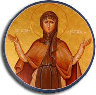

Saturday, February the 10th, 2007
back to: title, date or indexes
Today is the feast day of St Scholastica, the patron saint of convulsive children. This is good news for Pang Hill Orphanage, where the tinies are often convulsed by wild enthusiasms for exciting games such as Pin The Paper To The Hardboard and Put The Detritus In The Waste Basket. St Scholastica can also be invoked against rainstorms, so her feast day is doubly welcome, as Pang Hill is almost invariably lashed by ferocious teeming rain no matter what the weather is like elsewhere.
This morning the orphans will have gathered in the big pantry behind the canteen to sing their special song:
O Scholastica please stop the rains / So we can concentrate our fuming brains /
On playing Watch The Orphans Faint / O Scholastica our patron saint!
